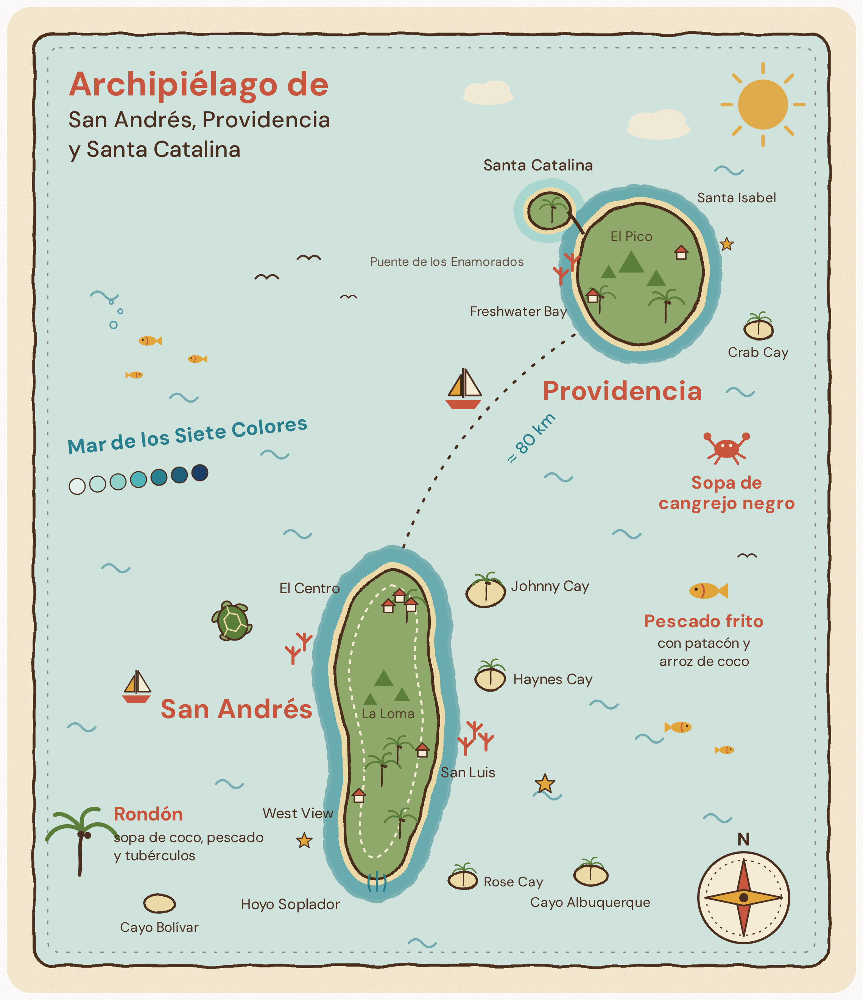

Contexto del Proyecto
La Cocina de la Abuela nace de la necesidad de salvaguardar el patrimonio inmaterial gastronómico del Archipiélago de San Andrés, Providencia y Santa Catalina. A través de una experiencia transmedia, se recuperan recetas, prácticas, memoria oral y saberes locales para que sean reconocidos, valorados y transmitidos por nuevas generaciones.
